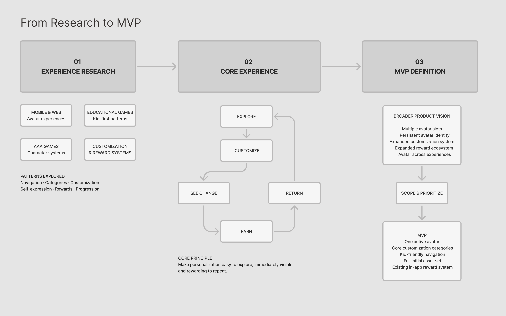
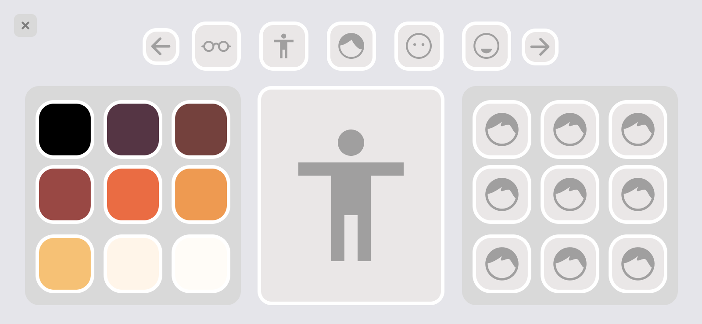
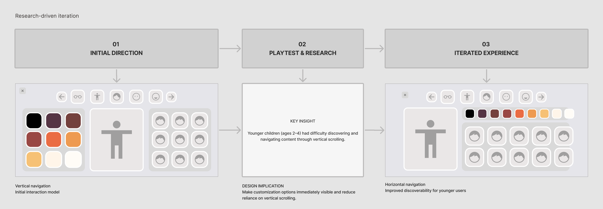
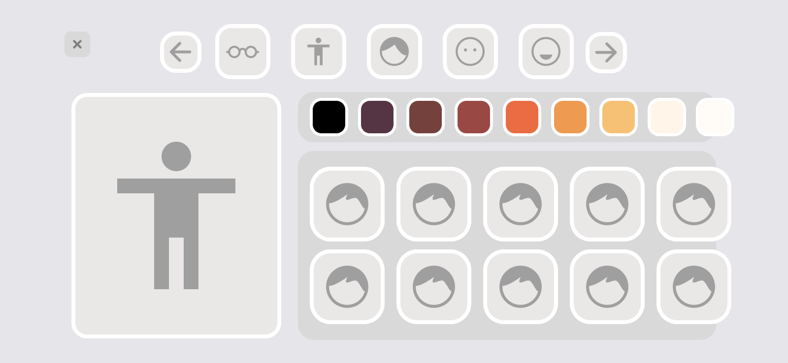
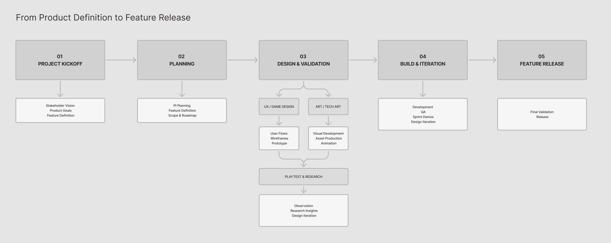
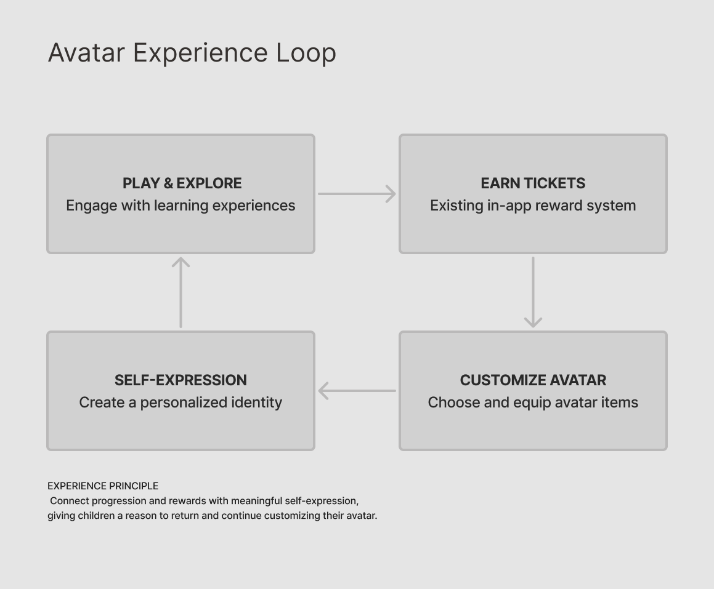

Avatar Activity
Evolving a high-engagement personalization experience for young learners through product strategy, research, and child-centered design.
A leading EdTech platform with millions of users
Product Owner & Game Designer
Retention · Child-Facing
Web · Mobile
This case study has been anonymized to protect proprietary information. Original production screens and visual assets cannot be shared. Any UI shown here has been recreated for demonstration purposes and does not represent the final shipped product.
01
The Challenge
Avatar Activity was one of the platform's highest-engagement experiences. As part of a major product evolution, the challenge was to modernize the experience without losing what children already loved about it.
The opportunity went beyond a visual redesign. We wanted to strengthen children's connection with the experience through personalization, creativity, and self-expression, while building a foundation that could scale into future product experiences.
Business
Evolve a proven, high-engagement experience to support long-term engagement and retention.
Kids
Give children a character they could personalize, identify with, and return to over time.
Product
Build a scalable personalization system that could grow beyond a single standalone activity.
Interaction
Make customization intuitive for very young users without limiting creativity or overwhelming them with complexity.
02
My Role
As Product Owner & Game Designer, I led the feature from early discovery and product definition through design, research, iteration, development, and release—translating stakeholder goals into a scalable experience for young users.
Product Strategy
Led early experience exploration, translated stakeholder requirements into product direction, defined the MVP, participated in PI Planning, and prioritized work across two-week Agile sprints.
Experience Design
Defined the core experience and interaction model, creating user flows, wireframes, prototypes, and foundational UI for the feature.
Research
Partnered with Research to define hypotheses, observe moderated playtests with children, identify behavioral patterns, and translate findings into design decisions.
Cross-functional Delivery
Collaborated with Engineering, Art, Technical Art, Curriculum, QA, Research, and stakeholders from product definition through feature release.
03
From Research to MVP
Before defining the new experience, I conducted a broad exploration of avatar and character customization systems across mobile and web products, educational games, AAA games, and reward-driven experiences.
Rather than looking for a solution to replicate, the goal was to understand how different products approached navigation, customization, self-expression, progression, and rewards—and identify patterns that could be adapted for a much younger audience.

Defining the Core Experience
The exploration helped clarify the experience we wanted to create: a simple, repeatable loop where children could explore options, customize their avatar, immediately see the result, receive a reward, and return to continue experimenting.
Scoping the MVP
The broader product vision included multiple avatar slots, a persistent avatar identity, expanded customization and reward systems, and opportunities for the avatar to appear across future experiences.
For the MVP, we prioritized one active avatar, the core customization categories, kid-friendly navigation, the initial asset set, and integration with the platform's existing reward system.
This allowed us to preserve the strongest elements of personalization and self-expression while keeping the first release focused and achievable.
04
Designing the Core Experience
With the MVP defined, the next challenge was translating the product direction into an interaction model that worked for very young children.
Although the platform served a broader age range, the experience was intentionally optimized for younger users. This meant designing around developing motor skills, limited reading ability, short attention spans, and the need for immediate visual feedback.
Large Touch Targets
Generous interaction areas supported developing motor skills and made customization easier to control.
Visual Communication
Categories, items, and interactions relied primarily on visual cues, minimizing dependency on reading.
Focused Choices
Customization offered meaningful variety while keeping decisions manageable and reducing unnecessary cognitive load.
Immediate Feedback
Changes were reflected directly on the avatar, helping children understand the relationship between their actions and the result.
Initial Interaction Model
The early customization direction centered the avatar as the primary point of focus, with visual categories for features such as skin tone, hair, clothing, shoes, and accessories.
The first interaction model explored vertical browsing to move through available customization options.

Reconstructed wireframe illustrating the initial vertical interaction model. Original production UI and assets are not shown.
05
Research Changed the Design
Research was embedded into the design process before release. For major interaction decisions, I partnered with the Research team to define hypotheses, align on what we wanted to learn, and observe moderated playtests with children.
A Critical Interaction Finding
During playtests, we observed that younger children—particularly ages 2–4—had difficulty discovering and navigating content through vertical scrolling.
Rather than treating this as a usability issue to address after launch, we used the finding to reconsider the interaction model before release.

The Design Decision
I redesigned the experience around horizontal navigation, making customization options more immediately visible and reducing reliance on vertical scrolling.
The revised interaction better aligned with the behaviors observed during research and became the direction we moved forward with.

Reconstructed wireframe illustrating the iterated horizontal customization model. Original production UI and assets are not shown.
06
From Product Definition to Feature Release
Bringing the experience to life required close coordination across Product, Research, Engineering, Art, Technical Art, Curriculum, and QA.
After the MVP direction was established, the feature moved into PI Planning and a multi-sprint development process. I translated the product direction into feature requirements and design work, while collaborating with partner teams to keep experience design, visual development, technical implementation, and research aligned.

Working Iteratively
The work progressed through two-week Agile sprints, with regular demos providing opportunities to align stakeholders, surface implementation constraints, and make targeted adjustments without losing sight of the release plan.
Research and design iteration continued alongside production, allowing the team to respond to usability findings while Engineering, Art, and Technical Art advanced the feature toward release.
07
Designing for Continued Engagement
Personalization was designed as part of a broader engagement system rather than an isolated activity.
Children could earn tickets through learning experiences and use the existing reward system to access additional customization options.
This connected progress elsewhere in the product with a meaningful form of self-expression.

Connecting Progress with Self-Expression
The goal was to create a reinforcing relationship between participation, rewards, and personalization: children could play and explore, earn tickets, customize their avatar, and see that identity reflected back in the experience.
By connecting rewards with something personally meaningful, customization provided another reason to return and continue exploring.
08
Outcome & Reflection
Research-Informed Experience
Translated behavioral insights from moderated playtesting into interaction patterns better suited to younger users.
Scalable Personalization
Established a focused customization framework that could support expanded avatar experiences and personalization over time.
Cross-Functional Delivery
Took the feature from early product definition through research, iterative design, multi-sprint development, and release in close collaboration with cross-functional partners.
Reflection
This project reinforced that designing for children requires more than simplifying an interface. It requires understanding how developing motor skills, cognitive abilities, attention, and learned interaction patterns shape the way young users experience digital products.
Leading the feature from discovery through release also strengthened my approach to product design: explore broadly, define the right problem, reduce the vision to a focused MVP, validate assumptions early, and use research to guide decisions throughout delivery.